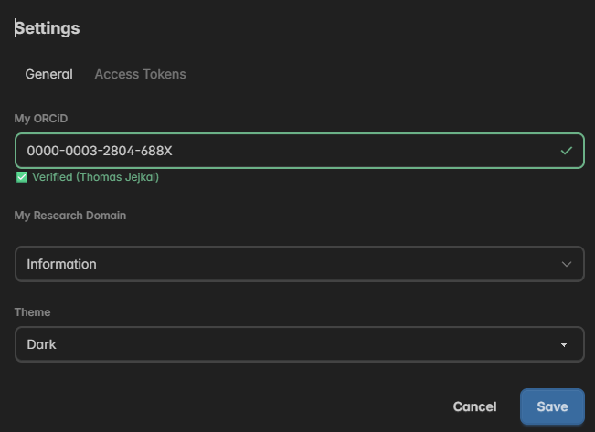
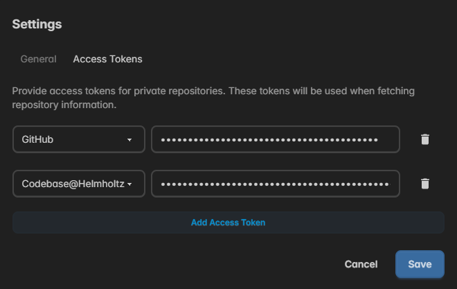

Profile Settings
In the profile settings you can persist core attributes, UI settings, and access tokens for a range of supported Git platforms. You can access the profile settings when logged in by clicking the "Logged in" menu entry in the upper right and then selecting "Profile Settings".
General

In the general settings you can set your ORCiD and the default research domain, that should be pre-filled in the core attributes when creating a new FAIR Digital Object. Furthermore, you can configure the default theme that will be used every time you open FDO MoMenT.
Access Tokens

In the access tokens settings you can add access tokens to read information via Git platform APIs, i.e., for auto-detecting FDO attributes in the Software Module. FDO MoMenT supports a range of Git platforms which you can select in the dropdown component on the left after adding a new access token. Then, copy&paste the access token generated in the settings of your Git platform into the text field. If no longer needed, single access tokens can also be removed.